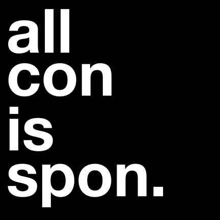

all con is spon
Our age is one defined by the ubiquity of information. In a world of abundance and globalized trade, the most scarce resource is our attention. Action requires decision. Decision requires thoughts. Thoughts require information. Information transfer requires attention and the competition to put information in front of our eyeballs has never been more fierce. The largest, most profitable companies the world has ever seen hire the sharpest and most creative minds to optimize every millisecond of our time and every pixel of our screens. Armed with the most powerful computing clusters ever built, governments have entire departments dedicated to tracking communications and media publications, across the world. Even at the smallest scale, the twitter account with 5 followers will spew propaganda to alter an algorithm’s performance and the instagram micro-influencer with 500 followers will pepper her feed with undisclosed advertisement.
Each quantum of information, each meme, each tweet, each headline steers our minds in a new direction. Each piece of content redirects the electrical pulses that flow through our neurons, changing the way we view ourselves and the social, political and physical world around us. Each of these memes influences our actions in an imperceptibly small way. Over time and repeated exposure, the memes, the ads, the posts, the headlines, the videos, the tweets, dictate our thoughts. Our thoughts dictate our decisions. Our decisions dictate our actions.
A world free from the information onslaught is a panglossian dream; the ever increasing torrent of content is here to say. Retvrning to a world of 3 TV stations and a local newspaper, a world of Normal Rockwell paintings and daily good turns, is a trad daydream. The maelstrom of shocking memes, stealth edits, addictive tiktoks, and state-sponsored bots is here to stay. Each and every meme, this manifesto included, has the sole purpose of changing the way you think. We can’t control the source of these viral information quanta, we can’t control the distribution channels, we can’t verify the authenticity or begin to guess the motives. The sole thing we can control is our own perception of them. For when we control our perception of these potent memes, they cease to carry the same influence over thoughts, our decisions, and our actions.
We must remember that all content is sponsored.
